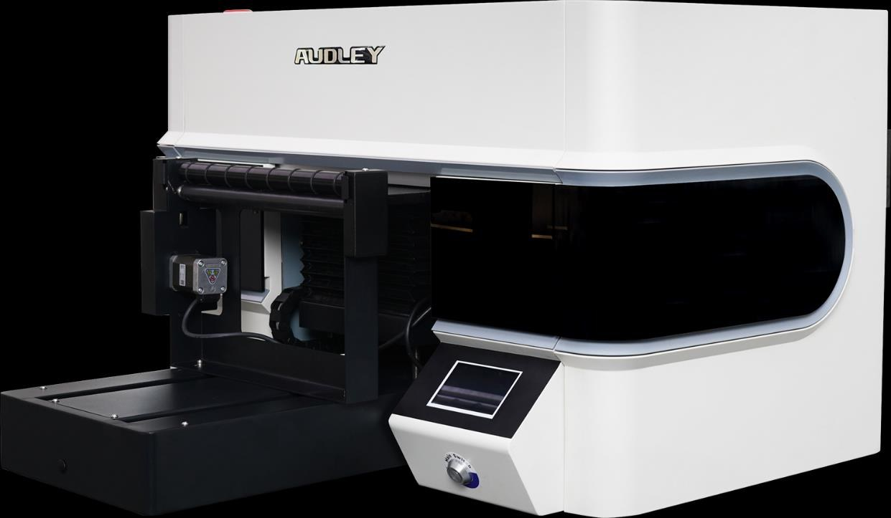
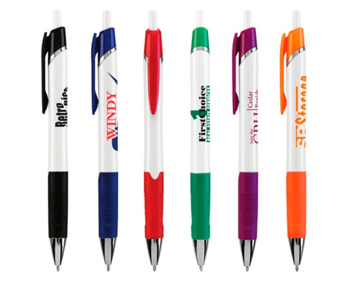
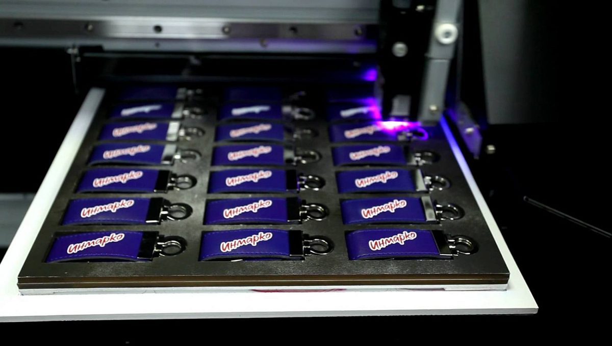
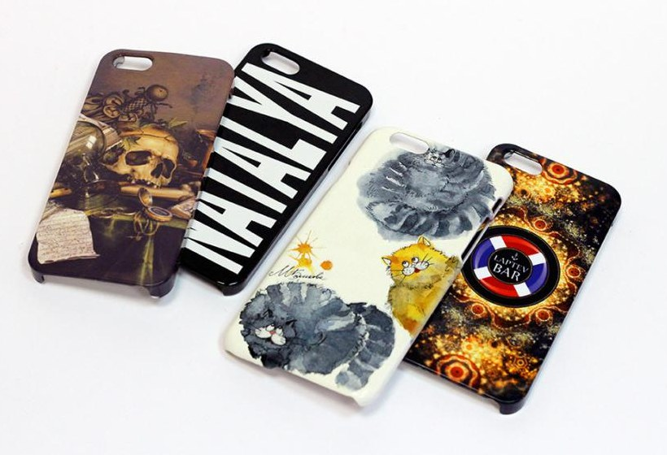

Представьте: вы приходите на встречу с клиентом, протягиваете ему ручку. Обычную. С наклейкой, которая уже слегка отклеивается. Или — ручку, на которой ваш логотип сияет так, будто его нарисовали лазером. Какой вариант запомнится? Ответ очевиден. И мы это поняли.
Типография «Лазурь» купила машину, которая ломает все правила. Это УФ-принтер Audley UV-3047 — и он не просто печатает, он оживляет предметы. Бумага? Пожалуйста. Но это скучно. Давайте про то, что можно взять в руки, поставить на стол, повесить на ключи или подарить на корпоративе.
Мы распечатаем ваш логотип, слоган, мем, фотографию кота или даже целую картину на:
Не наклейка, не гравировка, не термотрансфер — а прямая УФ-печать прямо на корпусе. Цвета сочные, края идеальные, ничего не стирается. Ваш клиент будет писать такой ручкой и каждый раз вспоминать вас. Даже когда вы не просите.
Металл, пластик, дерево, акрил — теперь это холст. Хотите брелок-шестиугольник с вашим лого? Или мини-версию вашего продукта? Мы напечатаем. С белой подложкой на темном, с лаком для объема. Выглядит так, будто брелок сделали на заказ в студии дизайна. Так и есть.
Кружка — это, по сути, маленький рекламный щит, который всегда с собой. Мы печатаем на ней всё: от логотипа до фото вашей команды в шапках Деда Мороза. УФ-слой не боится воды, горячего кофе и даже того, что ваш сотрудник бросит кружку в микроволновку (не бросайте, но она выдержит).
Никаких пленок, никаких наклеек. Печать прямо на чехле. Хотите — градиент, хотите — ваш портрет, хотите — принт с надписью «не трогай, это мама». Мы не осуждаем, мы печатаем.
Дерево, стекло, металл, кожа, камень. Если это можно поднять одной рукой — мы на это напечатаем. Медали из акрила, таблички из металла, панно из дерева. Всё в вашем фирменном стиле, с объемом и блеском.
Для офиса, кафе, салона, студии. Печатаем на ПВХ, акриле, металле. С лаковым покрытием или матовым. Красиво, стойко, статусно.

УФ-печать — это когда чернила не впитываются, а мгновенно застывают под ультрафиолетом. Никаких испарений, никаких ожиданий, никаких «ой, давайте перепечатаем через час». Схватывает мгновенно. А значит:

Вы перестаете думать категориями «бумага и картон». Вы начинаете думать категориями «мерч, который продаёт сам себя».

Мы уже печатаем на брелоках, ручках, кружках, чехлах, дереве и даже на камне. Осталось только придумать, что на них нанести.
«Лазурь» — печатаем то, что нельзя напечатать. Или можно. Но так красиво — только у нас.
Типография, которая не боится экспериментов.
Типография «Лазурь».